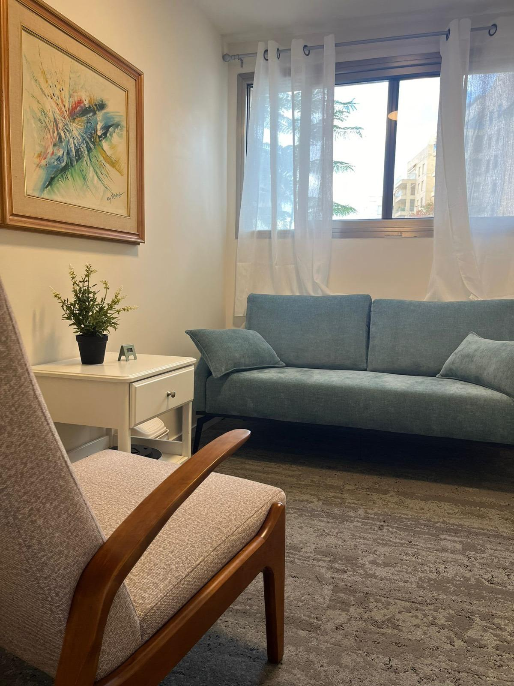

01בעולם העסקי והקריירה
יש לכם רעיונות, יכולות ושאיפות, אבל דחיינות, פחד מכישלון או עומס מנטלי עוצרים אתכם מלקבל החלטות ולפרוץ קדימה.
תהליכי מיקוד, פריצת חסמים והגדרת מטרות בעולם העסקי ובזוגיות – בגישה שמשלבת חשיבה אנליטית עם כלים תודעתיים עמוקים.
15 דקות · ללא עלות · ללא התחייבות


נעים להכיר, אני שני קאופמן. אני מלווה אנשים, בעלי עסקים וזוגות להפוך עומס מחשבתי ודפוסים מעכבים לבהירות, תקשורת מדויקת ופעולה פרקטית. זה יכול לפגוש אתכם בעסק או בבית:
יש לכם רעיונות, יכולות ושאיפות, אבל דחיינות, פחד מכישלון או עומס מנטלי עוצרים אתכם מלקבל החלטות ולפרוץ קדימה.
שיחות שחוזרות על עצמן, קושי להציב גבולות או להביע צרכים בלי להיכנס למגננה, ותחושה שהפוטנציאל של הקשר לא ממומש.
הרצון לעשות שינוי אמיתי, אבל חוסר בהירות לגבי הצעד הראשון או קושי להתמיד לאורך זמן.
מחשבות טורדניות שלא נותנות מנוח, תחושת הצפה וקושי "לכבות את הראש" בסוף היום.
גם התוכנית העסקית או הזוגית הטובה ביותר לא תתממש אם יש חסם פנימי שמנהל אותנו מאחורי הקלעים.
הדרך שלי אל עולם הטיפול והליווי נולדה מתוך החיבור שבין הבנה עמוקה של מערכות, מספרים והחלטות, לבין הסקרנות למה שמניע בני אדם באמת.
הסיפור שליבודקים יחד מה האתגר או המטרה שעומדים על הפרק, ורואים שיש חיבור והתאמה.
במפגש הראשון מבינים מה תוקע כרגע, מה המטרה שאליה רוצים להגיע, ובוחרים את הכלים המתאימים ביותר עבורך – שיח, NLP, דמיון מודרך או Access Bars.
סדרת מפגשים קצרת מועד שבה משחררים חסמים ומטמיעים כלים שתוכלו לקחת איתכם הלאה – לעסק ולחיים האישיים.
15 דקות · ללא עלות · ללא התחייבות